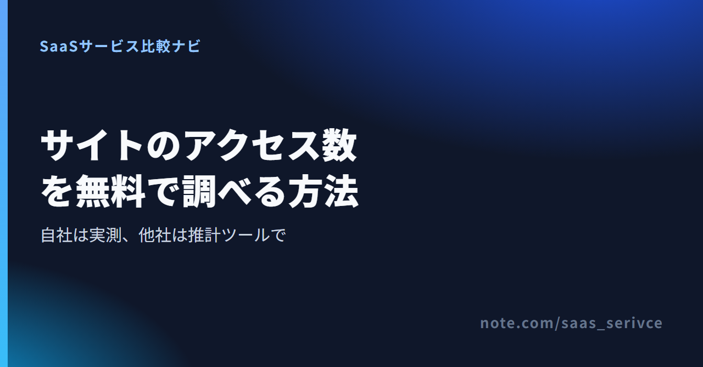
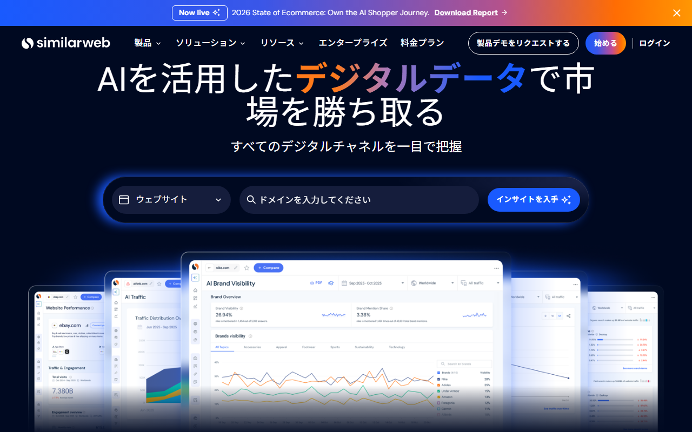
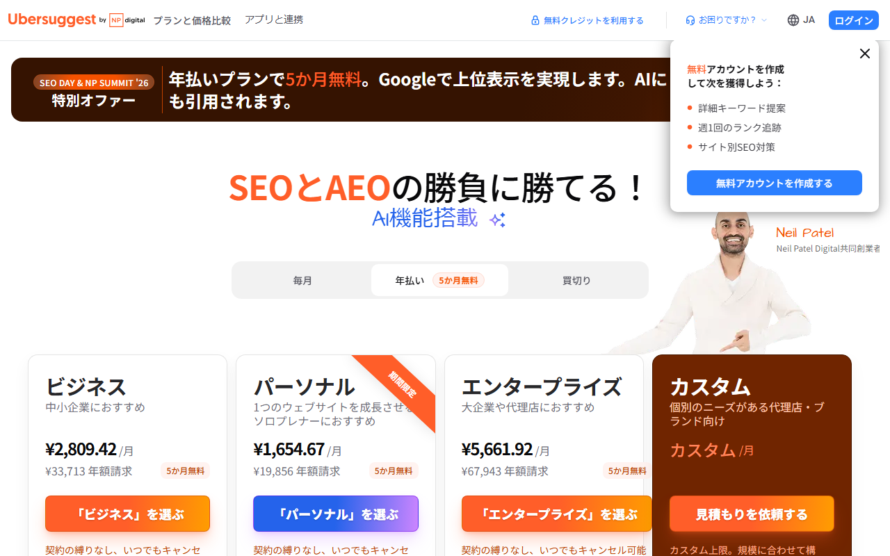

サイトのアクセス数を無料で調べる方法｜自社・他社別のツールと推計値の注意点
サイトのアクセス数を調べる方法は、自社ならGA4などの実測、他社ならSimilarwebなどの推計に分かれます。
この記事では、自社と他社それぞれの調べ方を紹介します。推計値の読み方や、有料版が必要になる場面も扱います。
サイトのアクセス数を無料で調べる6つの手段
- GA4：自社の訪問数・PV／無料
- Search Console：検索クリック／無料
- Similarweb：訪問数／無料枠・月$199〜
- Ubersuggest：検索流入／無料枠・買切¥45,990〜
- Semrush：自然検索／無料枠・月$139〜
- Ahrefs：検索流入／無料枠・月¥4,460〜
迷ったら、他社サイトの訪問規模がわかるSimilarwebがおすすめです。登録なしで試せて、無料アカウントにも期限がありません。
無料登録の案内と、競合分析で見られる項目がわかります。
「アクセス数」は何の数字か：訪問数・PV・検索流入の違い
「アクセス数」といっても、ツールによって数字の中身は違います。知りたい数字を決めないままでは、異なるツールの結果を比べられません。
訪問数（セッション）・PV・ユーザー数の違い
- 訪問数（セッション）：サイトに来てから離れるまでの一連の閲覧を1回と数える。1人が朝と夜に来れば2回
- PV（ページビュー）：表示されたページの数。1回の訪問で5ページ読まれれば5PV。GA4では「表示回数」という名前で出てくる
- ユーザー数：訪れた人の数。同じ人が何度来ても、原則として1人と数える
Similarwebが示すのは訪問数で、PVではありません。「競合は月◯万PV」といった数字を見かけたら、どの指標の話なのかを確かめてから比べてください。
アクセス数を調べたくなる場面
- 自社の現状把握：施策の前後で訪問数がどう動いたか、どのページが読まれているかを知りたい
- 競合の集客規模の比較：同じ業界のサイトが、自社の何倍くらいの人を集めているのか見当をつけたい
- 取引相手の規模確認：広告の出稿先や提携先に、どのくらい人が来ているのか確かめたい
自社の現状把握には、正確な数字が要ります。競合や取引相手の調査では、規模の桁がわかれば判断の材料になります。
目的に合わせてツールを使い分けましょう。
自社サイトはGA4とSearch Consoleで無料で見る
自分で管理するサイトの数字は、Googleが無料で提供するGA4とSearch Consoleで見られます。どちらも計測するサイトで事前に設定するため、第三者のサイトは調べられません。
GA4で訪問数・PVを見る
GA4は、サイトに入れた計測用のタグで訪問者の動きを記録するツールです。タグを入れる前の期間はさかのぼれません。
- Googleアカウントでアナリティクスにログインし、アカウントとプロパティ（計測するサイトの単位）を作る
- 発行された計測タグ（Googleタグ）を、サイトの全ページに入れる
- レポートで期間を指定し、訪問数・表示回数・ユーザー数を流入経路別やページ別に見る
WordPressなら、プラグインやテーマの設定欄からタグを設置でき、コードの書き換えは不要です。タグを自由に入れられないブログやネットショップでは、備え付けのアクセス解析を使います。
GA4の公式ページです。ヘルプは日本語で読めます。
Search Consoleで検索からの流入を見る
Search Consoleは、管理サイトがGoogle検索でどう表示され、どれだけクリックされたかを見るツールです。表示回数やクリック数、掲載順位のほか、表示につながった検索語もわかります。調査対象は、所有権を証明した管理サイトのみ。
GA4の訪問数とSearch Consoleのクリック数は一致しません。Search Consoleが数えるのはGoogle検索からのクリックだけです。
SNSやブックマーク、ほかの検索エンジンからの訪問は含まれません。
Search Consoleの公式ページです。GA4と連携させておけば、検索語とサイト内での動きをつなげて見られます。
他社サイトはSimilarwebの無料版で見る

画面は日本語です。中央の入力欄に、調べたいドメインを入れます。
Similarwebは、登録しなくても1日3回まで他社サイトを調べられます。無料アカウントに期限はありません。見られるのは過去1〜3か月分で、一覧は上位5件まで。国別の絞り込みもできません。
登録なしで調べる（ウェブサイトのチェッカーとChrome拡張）
いちばん手軽なのは、公式サイトの無料チェッカーに調べたいサイトを入れる方法です。ログインせずに使えるかわりに、調べられるのは1日3回までです。
- similarweb.com/website/ を開く
- 検索窓に、調べたいサイトのドメイン（example.com のような形）を入れる
- 結果の画面で、直近3か月の訪問数や国別の訪問の内訳、流入チャネル、類似サイトを見る
普段から多くのサイトを見るなら、無料のChrome拡張が便利です。アカウント登録は不要。開いているサイトの訪問数やランキングのほか、流入チャネルや地域別トラフィックも表示されます。
無料アカウントで見られる範囲
無料アカウントには使用期限がありません。そのかわり、見られる範囲は次のように限られます。
- さかのぼれる期間：過去1〜3か月分（直近1・2・3か月から選ぶ）
- 一覧の表示：上位5件まで
- 国別の絞り込み：できない（世界全体の数字だけ）
ログイン後の画面は、設定（Settings → Account → Language）から日本語に切り替えられます。
競合の今の規模を知るだけなら、直近3か月分で足ります。
年末や年度替わりに集客が大きく動く業種には不向きです。前年の同じ月と比べられず、伸びたのか例年並みなのかを判断できません。
日本語の公式サイトから無料アカウントを作れます。無料版と7日間の無料トライアルの違いも、申し込み前にわかります。
7日間の無料トライアルとは別物
無料トライアルは、7日間が終わる前に解約しないと、そのまま有料プランの課金が始まります。利用規約では、支払った料金は返金しないと定められています。
- クレジットカードの登録が必須
- 使えるのは1日15アクションまで
- サイトの分析は世界全体の数字だけで、期間は直近1〜3か月から選ぶ
期間も国別の絞り込みも無料版と変わらず、トライアルでは前年との比較も、日本だけの数字の調査もできません。アクセス数を無料で見たいだけなら、トライアルは不要です。
有料プランを試す場合は、終了日を先に控えておきましょう。月額契約に移ったあとも、解約は更新日の14日前までに申し出る必要があります。
検索からの流入を見るならSEOツールの無料枠
Ubersuggest・Semrush・Ahrefsは、どれも他社サイトへの検索流入を無料で推計できます。出てくるのは検索結果から来る訪問の推計で、Similarwebの訪問数とは数えている範囲が違います。
Ubersuggest：無料アカウントでまず試せる

料金ページは日本語で、年払い・買い切りの切り替えと無料アカウントの案内が見えます。
Ubersuggestの無料チェッカーに競合ドメインを入れると、自然検索と広告からの流入を推計できます。上位ページやキーワード、被リンクも一部表示されますが、詳しいデータは有料会員向けです。
表示される数字は複数のデータ提供元をもとにした推計値だと、公式が明記しています。
無料アカウントを作ると、キーワードの提案や週1回の順位追跡を使えます。サイトごとのSEO対策の提案もあり、主に自社サイト向けです。
月額のサブスクリプションには、1回限りの7日間無料トライアルがあります。アプリと料金ページは、どちらも日本語表示です。
年払いと買い切りの価格が円で並び、無料アカウントとの機能の差も見比べられます。
Semrush：無料アカウントは1日10レポートまで

料金ページは日本語で、SEOとAI検索のプラン別に年払いのドル価格が並びます。
Semrushの無料アカウントは、カードを登録せずに作れます。「ドメイン概要」に競合サイトを入力すると、自然検索の推計流入を無料で見られます。
主要なツールを合わせて1日10レポートが上限です。毎日何十サイトも調べる使い方には足りません。
直接の訪問やSNSも含めた訪問数全体は、「Traffic & Market」で推計します。これはSEOとは別の有料ツールキットです。
無料アカウントで開けるのは、サンプルのドメインだけです。有料プランには7日間の無料トライアルもあり、期間中はいつでも取り消せます。
Semrushの料金ページは日本語ですが、価格はドル表示です。SEO単体のプランと、AI検索での見え方を測る機能を加えたプランがあります。
Ahrefs：他社は無料チェッカー、自社は無料版で

料金ページは日本語で、ライト・スタンダード・アドバンスドの月額が円で表示されています。
Ahrefsの無料版（Ahrefs Webmaster Tools）は、所有権を証明したサイト向けです。サイトエクスプローラーとサイト監査を使えます。
利用回数には上限があります。他社サイトの詳しい分析には有料プランが必要で、無料トライアルや割引もありません。
無料版とは別に、登録なしで使える「Webサイトトラフィックチェッカー」もあります。他社サイトの検索流入を無料で推計できるチェッカーです。
競合の検索流入を調べるなら、こちらが便利です。自社サイトの被リンクや検索流入をSearch Consoleとは別の角度から見るなら、無料版を使います。
Ahrefsの日本語料金ページでは、日本からアクセスすると価格が円で表示されます。有料プランの解約後に無料版へ切り替わることも案内されています。
推計値はどこまで当てになるか
他社サイトの数字は、規模感と推移をつかむためのものです。1の位まで正確な数字ではありません。
ツールごとに数字が違う理由
同じサイトでも、SimilarwebとSEOツールでは数字がかなり違います。どちらかが間違っているのではなく、数えているものが違うのです。
- Similarweb：直接の訪問、SNS、広告、検索など、あらゆる経路から来た訪問数の全体を推計する
- SEOツール（Ubersuggest・Semrush・Ahrefs）：検索順位と月間検索数をもとに、検索結果からの流入を推計する。主に自然検索を扱い、検索広告からの流入も推計する
- GA4：管理サイトに入れたタグで、実際の訪問を記録する（推計ではない）
SNSや検索以外の広告で集客しているサイトほど、SEOツールの数字はSimilarwebより小さく出ます。検索からの流入が中心なら、差は小さくなります。
推計の元になるデータが違うため、一致はしません。
Similarwebは、サイト運営者がGoogle アナリティクスなどを連携して提供する実測データを使います。自社製品を入れた端末から匿名で集めるデータも利用します。
これらを公開データや通信事業者などから得るデータと組み合わせ、訪問数を推計しています。
小さなサイト・日本のサイトで気をつけること
推計の元になるデータは、訪問数が多いサイトほど集まりやすくなります。データが少なすぎて推計できない場合、「Not enough data」か「N/A」と表示されます。
数字が出ても、訪問数の少ないサイトは推計のぶれが大きくなることがあります。
無料版では国別に絞り込めません。海外からの訪問が多いサイトでは、表示される数字に日本以外からの訪問も含まれます。
一方、無料のチェッカーやChrome拡張には国別の割合が出ます。合計の訪問数にその割合を掛ければ、日本からの訪問規模を概算できます。
この方法は推計値同士を掛け合わせるため、桁の目安として扱ってください。
推計値を使うときのコツ
- 同じツールで比べる：Similarwebの数字とSemrushの数字を並べない。競合AとBを比べるなら、どちらも同じツールで調べる
- 月ごとの推移で見る：ある1か月の数字より、3か月で増えているか減っているかのほうが当てになる
- 自社サイトで答え合わせをする：自社サイトを推計ツールとGA4の両方で調べる。推計値が多めか少なめかわかると、競合の数字を読む目安になる
ずれ方はサイトの規模や流入経路の構成で変わります。自社サイトの結果を、そのまま競合には当てはめられません。
自社サイトの数字が出なければ、答え合わせもできません。その場合は、競合同士の大小を比べる程度にとどめます。
無料で足りないときの費用の目安
無料版で困るのは、より長い期間の推移や国別の数字が必要になったときです。上位5件より先の一覧も見られません。
どの制限が支障になるのかを見極めてから、プランを選びます。
有料が必要になる場面
- 3か月より前の推移を見たい（前年の同じ月と比べたい）
- 日本からの訪問だけに絞りたい
- 上位5件より多くのページや流入元、キーワードを見たい
- 複数の競合サイトを毎日のように比べたい
2つ目には注意が要ります。Similarwebで国別に絞り込めるのは法人向けプランだけで、個人向けプランに上げても絞り込めません。
日本からの訪問規模を知るだけなら、無料画面に出る国別の割合から概算できます。日本に絞った推移やページ単位の数字まで要るときに、法人向けを検討します。
ツール別の料金の目安
同じ有料プランでも、見られる数字はツールによって違います。価格だけで選ばず、必要な数字まで見られるかを確かめてください。
- Similarweb 個人向け（あらゆる経路の訪問数の推移）：月額$199からで、1ドル=157円換算（執筆時点の目安。為替で変動）なら約3万1,000円です。過去データは最大15か月。支払いはクレジットカードのみ、サポートは英語のみです
- Similarweb 法人向け（国別の絞り込みまで）：年額$14,000から（約220万円）の年契約で、個別見積もりです。請求書払いと日本語の専任サポートに対応します
- Semrush（他社の検索流入とキーワード）：SEOプランの月額$139（約2万2,000円。年払いなら月あたり$117.33、約1万8,000円）から。訪問数全体を推計するTraffic & Marketは、このプランには含まれません
- Ahrefs（検索流入が中心）：日本からは円で表示され、Starterの月額¥4,460から。支払いはVisa・Mastercard・American Express・UnionPayで、JCBは案内されていません
- Ubersuggest（検索流入が中心）：円表示で、月払い・年払いのほかに買い切りのプランがあります。パーソナルの買い切りは¥45,990で、取り消しも返金も不可。年払いの価格は期間限定のキャンペーンで時期によって変わります
Ubersuggestの支払いは主要なクレジットカード、デビットカード、PayPalに対応しています。月払い・年払いのプランなら、依頼により会社宛ての請求書も発行されます。
個人向けプランは開始価格のみ掲載され、プランごとの金額は公開されていません。法人向けの見積もりは、日本語の問い合わせ窓口から依頼できます。
海外のサービスにドルで払う場合、消費税（リバースチャージ）やインボイスの扱いは事業の状況によって変わります。経費として処理する前に、税理士に確認してください。
まとめ
自社サイトはGA4とSearch Consoleで実測し、他社サイトは推計ツールで規模感と推移をつかみます。無料で調べるときの基本は、この使い分けです。
推計値を比べるときは、同じツールを使います。自社サイトでも答え合わせをしておけば、読み違いを減らせます。
最初に試すなら、Similarwebの登録不要のチェッカーかChrome拡張が手軽です。検索からの流入だけなら、UbersuggestやAhrefsの無料チェッカーでも足ります。
直近3か月分で足りなければ、次は無料アカウントを作ります。それでも期間や件数が足りないときに、有料版を検討すれば十分です。
日本語の公式ページです。無料登録と法人向けプランの見積もり依頼は、このページから手続きできます。